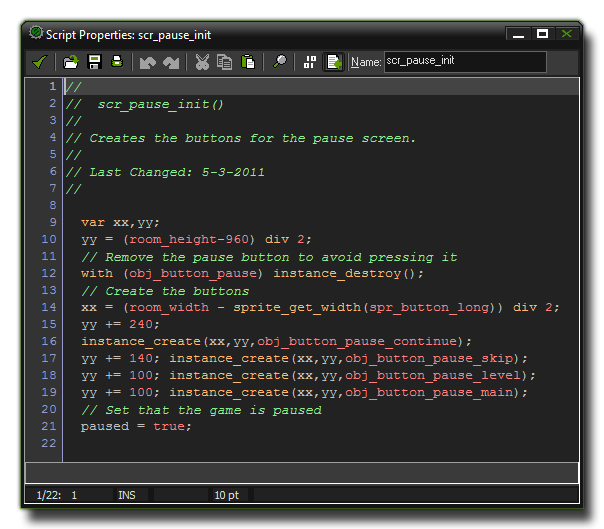

一个代码段包含一系列指令，也可称作“语句”。这些指令在游戏运行时，由GMS解释并执
行，以实现某种功能。“某种功能”可以简单到2加2等于4，或者复杂到“当敌人血量低于一定值就逃跑”。
程序的结构可以千差万别，但最基本的通常都像下面这样：
<语句>;
<语句>;
...
语句之间用';'隔开，以避免变量声明时出错，并且能让你的代码清晰、轻巧。语句的种类包括： 变量声明、表达式、函数调用等。下面这个脚本（script）更加直观地演示代码段“ 长什么样子”： Script Editor: 
语句和函数分为多种，分别在帮助文件的不同章节加以说明。
| Converted from CHM to HTML with chm2web Pro 2.85 (unicode) |